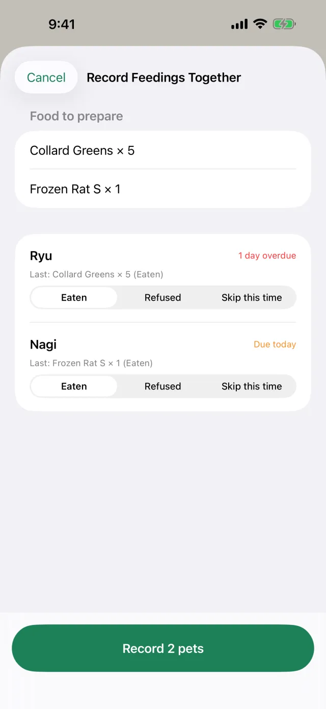
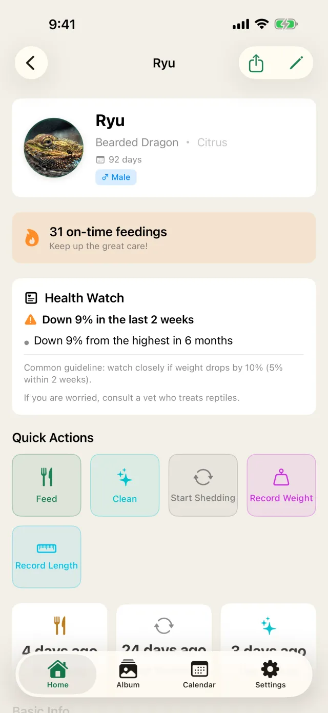
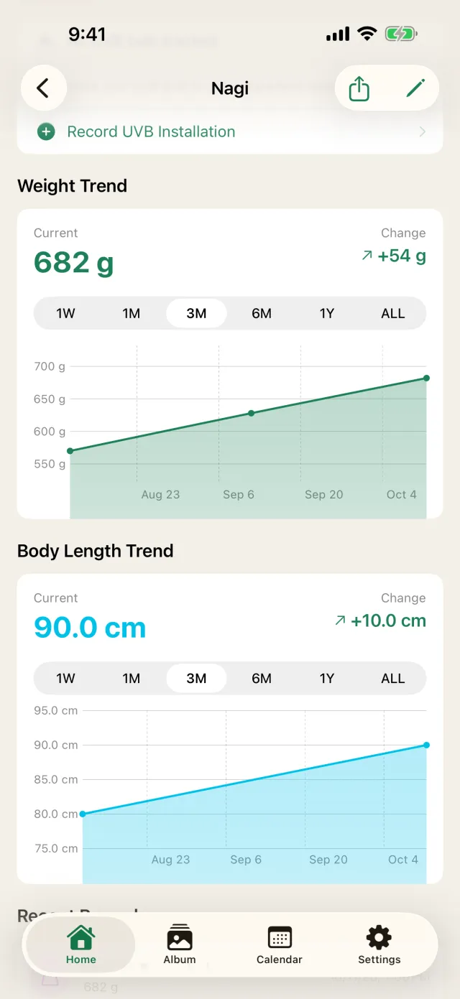
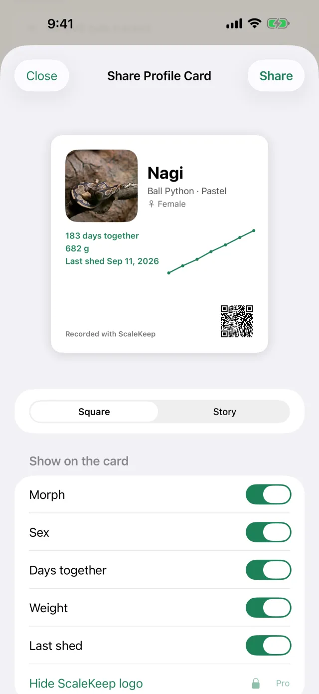
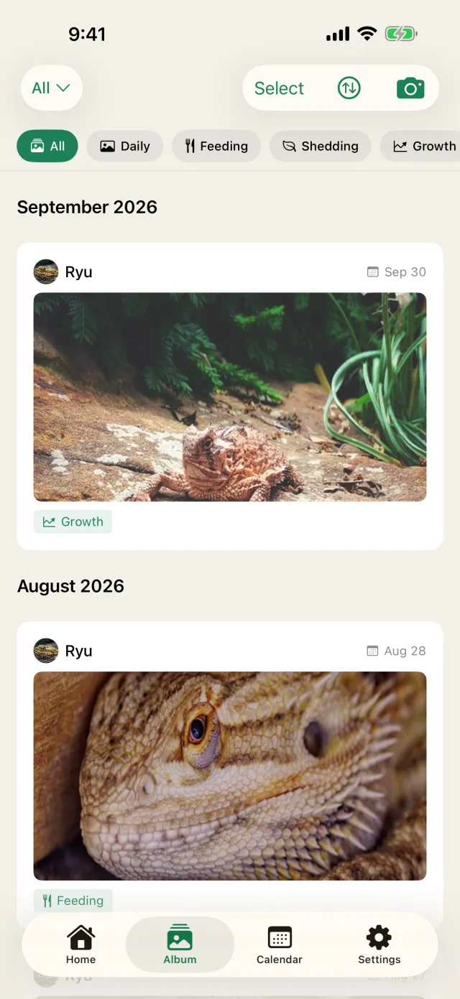

Quick to log. Easy to keep up.
Built for reptiles that eat every few days to every couple of weeks.

Feed them all at once
Pets that are due are listed in the order to feed them, with a total of the food to prepare, so you know how many frozen mice to thaw.
- Pick Eaten, Refused or Skip for each pet and save them together
- Reuses the previous food and quantity

Catch refusals and weight loss early
ScaleKeep works out refusal streaks, days since the last meal and weight loss from your records, and notifies you when a commonly used guideline is crossed.
- Separate guidelines for snakes and other reptiles, and for juveniles and adults
- Not a diagnosis. If you are worried, consult a reptile vet

Watch them grow
Weight and length charts built automatically from your records. Switch the range from one week to all time.

Show off your reptile
Put a photo, species, morph and weight chart on one card. Choose square for posts or tall for stories, and pick what to show. The image is made on your device and never uploaded.

All of their care in one app
- Record sheds from the first signs to completion
- Reminders for enclosure cleaning and UVB bulb replacement
- A photo album to look back on their growth
- Feedings, sheds and weights on a calendar
- See the next feeding on a Home Screen widget
Seven popular species, ready to go
Typical feeding intervals for each species set the next feeding date for you. Any other species can be added too.
Your records stay yours
No account
Start right after installing. No email address or password.
iCloud sync
Your records stay in sync across iPhone and iPad through your own iCloud. You can turn it off in Settings.
CSV export
Export your records as CSV at any time, for vet visits or spreadsheets.
Nothing sent to us
Your pets' names, photos and recorded values are never sent to our servers.
Pricing
The core features are free.
Free
$0
- Up to 3 pets
- Feeding, shedding, weight, cleaning and UVB records with reminders
- Logging from reminders and recording feedings together
- Health Watch (refusals and weight loss)
- iCloud sync and CSV export
- Includes ads
Pro
Monthly, yearly or one-time
- Unlimited pets
- No ads
- Remove the app name and QR code from profile cards
The yearly plan starts with a 7-day free trial for eligible users. Monthly and yearly plans are auto-renewing subscriptions. Prices are shown in the App Store and vary by region.
FAQ
If I cancel Pro, will I lose my records?
No. Your pets and records stay viewable on the free plan. Pro is needed only to add a fourth pet or more.
Can I move my records to a new iPhone?
With iCloud sync on, your records arrive on a new device signed in with the same Apple Account. You can also export them as CSV.
Does Health Watch diagnose illness?
No. It only tells you when your records cross a commonly used guideline. It is not a diagnosis. If you are worried, consult a reptile vet.
Is there an Android version?
Not at the moment. ScaleKeep is for iPhone and iPad (iOS 17 or later).
Start with today's feeding.
Free for up to 3 pets.